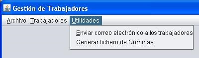
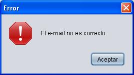
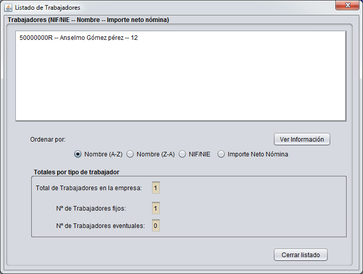

|
Actividad 1.- Dotar de una interfaz gráfica a la aplicación de gestión de trabajadores que venimos desarrollando en las tareas anteriores.
¿Qué debe incluir nuestra aplicación?
- Lo primero que debe hacer al ejecutar la aplicación es intentar cargar desde fichero (por ejemplo D:\Trabajadores.dat, o donde los hayas guardado en la tarea anterior) al ArrayList donde se almacenarán los datos de los trabajadores. Si no existe el fichero o está vacío, lógicamente el ArrayList estará vacío, sin ningún trabajador. Entonces, si no existe dicho fichero, se avisará al usuario de que la aplicación no tiene datos grabados, mediante un mensaje como este:

- Si existe el fichero, se cargarán los datos guardados de modo que los trabajadores irán al ArrayList, y también se recuperarán los datos adicionales que haya (variables estáticas que deban recuperarse para restaurar el entorno de ejecución de la aplicación, y que continúe tal y como estaba cuando se guardaron los datos).
- Habrá una opción en el menú para guardar los datos en el fichero trabajadores.dat, que lógicamente guardará los datos que comentábamos en el punto anterior.
- En caso de que al ejecutar la aplicación, se modifique algún dato, y el usuario intente salir de la aplicación sin haber guardado los datos, se le avisará indicando que si se sale sin guardar los datos, perderá los cambios realizados. Podría ser con un mensaje como: "Ha realizado cambios que no ha guardado en disco. ¿Desea guardarlos antes de salir?(S/N)".
- A continuación se mostrará una pantalla similar a la siguiente, donde puedes ver que hay un menú en la parte superior y un panel más abajo, con un campo de texto donde se puede introducir un NIF para realizar la búsqueda de un trabajador por su NIF o NIE. Al pulsar el botón Buscar, si el trabajador se encuentra en la lista, se mostrará en una pantalla similar a la de Altas de trabajadores que se muestra en la Actividad 2, solo que en el título de la ventana se indicará que se trata de Modificar Trabajador ... indicando el tipo de que se trate (Fijo o Eventual) y que el botón Guardar se etiquetará en el caso de la ventana de modificaciones como Actualizar:

- En el menú Archivo, tendremos las opciones: Guardar fichero de Trabajadores,
Exportar a XML, Importar desde XML y Salir. La opción de guardar volcará el contenido del ArrayList con la lista de los trabajadores al fichero de disco. Tanto al principio de la ejecución del programa, como cada vez que se guarde el fichero, la opción de guardar aparecerá inhabilitada, puesto que no habrá nada que guardar, y se habilitará cuando se haya efectuado algún cambio.
- En el menú Trabajadores, tendremos las opciones que ya conocemos, y que teníamos desde prácticas anteriores:

- En el menú Utilidades, tendremos las opciones de Enviar correo electrónico a los trabajadores (tal y como comentamos más abajo) y la de Generar Fichero de Nóminas de los trabajadores:

- Cuando haya que introducir datos, los que hay que establecer como el sueldo fijo, cuota obrera, etc., del menú Trabajador, emplearemos un cuadro modal como el que se puede ver en la siguiente imagen:

Actividad 2.- Añadir atributo nuevo a la clase Trabajador.
- Añadir un atributo de tipo String y nombre email a la clase Trabajador, para que lo hereden todas las subclases, y rehacer todos los constructores, métodos, opciones de los menús como las de importar, exportar, etc., y todo lo que sea necesario en definitiva para que la aplicación haga lo mismo que hacía hasta ahora, pero teniendo en cuenta la existencia de ese nuevo atributo. A modo sólo de ejemplo, la ventana de alta de trabajadores debería incluir un nuevo campo de texto para recoger el valor del atributo email del nuevo trabajador que se está creando.
- Se debe comprobar que el email introducido es válido. Para es menester, crearemos un método <span style="font-size: small;"><strong>public static boolean esEmailCorrecto(String email) </strong></span>que comprobará que la dirección de correo está "bien formada" usando una expresión regular.
- La expresión a usar para tener en cuenta todas las posibilidades de emails válidos es bastante compleja, por lo que nos vamos a limitar a usar una que incluye la mayoría de los emails válidos, pero que quien quiera puede intentar mejorar si ve que hay algún email correcto que no valida, o si ve que algún email incorrecto que sí valida. Dicha expresión regular es:
"^[_A-Za-z0-9-\\+]+(\\.[_A-Za-z0-9-]+)*@[A-Za-z0-9-]+(\\.[A-Za-z0-9]+)*(\\.[A-Za-z]{2,})$"
- El método anterior se usará para comprobar que un email es válido o no, de forma que el método <span style="font-size: small;"><strong>setEmail(String email)</strong></span> solo asignará el email al trabajador si éste es correcto según el método esEmailCorrecto().
- Al dar de alta un nuevo trabajador fijo, se mostrará una pantalla similar a la siguiente (aunque fíjate que la que mostramos es para trabajadores fijos, tendrá que mostrarse otra similar para trabajadores eventuales, pero que permita recoger los valores para los atributos específicos de éstos últimos):

- Cuando se vaya a modificar un trabajador, se mostrarán los datos en una pantalla similar a la anterior. Tanto en alta como en modificación, cuando se introduzca un dato incorrecto, como por ejemplo un email incorrecto, al darle al botón Guardar, se mostrará un mensaje de error similar al siguiente, que sería para el ejemplo del e-mail:

Actividad 3.- Mostrar Listados de trabajadores ordenados por distintos criterios.
- Para mostrar los trabajadores de la empresa, cuando se pulse en la opción de Listar Trabajadores, aparecerá una pantalla similar a la siguiente, donde como puedes ver, se podrá ordenar la lista de los trabajadores, según el criterio que se seleccione con los botones de radio.

Al estar sobre un trabajador y pulsar el botón de Ver Información, aparecerá la información del trabajador mostrándola mediante un JOptionPane.
Actividad 4.- Añadir funcionalidad nueva a la aplicación: envío de boletín de noticias por email a todos los trabajadores de la empresa.
- La opción del menú de Utilidades, sobre enviar correo, debe abrir una ventana en la que se pidan los datos necesarios para enviar el email, que en principio son:
- Asunto. Se trata de indicar sobre qué trata el mensaje.
- Texto del mensaje. Es el cuerpo del mensaje, el texto del boletín con las noticias de las que queremos informar. Se pueden introducir etiquetas html, (manualmente, eso sí, no es plan de complicarlo más de momento) para darle formateo a la salida.
- Usuario. Es la dirección de correo desde la que se envía el mensaje. Por defecto, tal y como se ve en la imagen, debe proponer la dirección de correo de la empresa. No obstante, como se desea que distintos miembros de la Dirección de la empresa puedan hacer uso de esta aplicación para enviar correos desde su buzón personal a los trabajadores, se debe permitir introducir otra cuenta distinta. Para ello, suponemos que las cuentas personales de los miembros de la Dirección tienen todas el mismo servidor de correo saliente que hemos configurado en el código.
- Contraseña. Es la contraseña de usuario, para poder acceder al servidor de correo saliente de dicha cuenta. Debe introducirse en un JPasswordField, diseñado específicamente para introducir contraseñas sin que se vea su contenido mientras se escriben, sustituyendo cada carácter por un asterisco, o algo similar, tal y como se aprecia en la imagen.

- Se piensa que en el futuro puede ser deseable enviar emails a otro tipo de colectivos con lo que la empresa se relaciona, como Proveedores, Clientes, etc. Es por eso que se ha pensado que sería deseable que las clases que representan a aquellos colectivos que puedan recibir mensajes implementen el interface ReceptorDeMensajes, para garantizar que implementará un método enviarEmail(String usuarioRemitente, String password, String asunto, String textoMensaje) de forma que podamos estar seguros de que si les enviamos ese método a un objeto de cualquier clase que implemente dicho interface, sabrá qué tiene que hacer para enviar el emai desde la dirección del remitente que se indique y para el que se ha suministrado la contraseña, con el asunto indicado y con el texto indicado al email del destinatario para el que se ha invocado al método. Queremos por tanto, que declares el interface ReceptorDeMensajes y que la clase Trabajador implemente dicho interface.
|


{kind=link}
{kind=link}
{kind=link}
{kind=link}
{kind=link}
{kind=link}
{kind=link}